There exists a fairly niche genre of games that can be hard to classify due to their hybrid nature. I was re-playing Kingdom Under Fire: The Crusaders again and it got me thinking about the genre. I would like to collect a list of the games on a single page because I did some searching around and struggled to find a definitive listing. There seem to be 2 types of hybrids that I'm thinking about - RTS/Action, and Tower Defense/Action. You could make the case that there's a 3rd genre - where one person plays the role of a commander and other players are on the ground. During my research I found several games like this, mostly with a military focus. I won't be documenting those for now just because I never played any, but I may come back and at least list some out.
Think I missed any games? Leave a comment or contact me so I can update the list!
RTS Hybrids
Kingdom Under Fire: The Crusaders
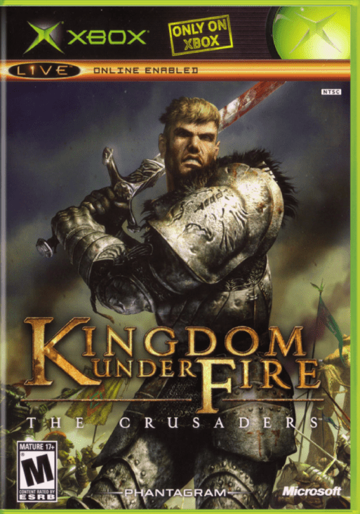
The boxart obviously intrigued me as a kid.
I played this game on the original Xbox circa 2005. I just bought it again on PC for a replay because I remember very little about it besides the gameplay. It's a bit ugly to look at, but I was surprised by how well the gameplay held up.
In KUF:TC, the missions are broken out into 2 phases. Tactics phase and action phase. Tactics phase has you moving your troops around the map. The default perspective has you locked to a single unit at a time, however you can hold a button to open up the battle map and give orders. The aiming of the waypoint can be a little funky so I found it best to use the map for moving my units around.
Once your unit engages an enemy, the game switches to the action phase. You have buttons for standard attacks, heavy attacks, a block/parry, and a few special moves. You can also summon in your AI controlled officers to perform a special attack. The flow of the action phase is to perform standard attacks to build up your SP, which you spend on the special attacks. In each engagement your goal is to quickly hunt down the enemy leader. Killing the leader causes the rest of their unit to retreat. Swiftly ending your engagements with the enemy will prevent you from taking excess damage. There's also magic, including healing magic just in case you do get beat up.
Playing this game again in 2022, I was surprised at the responsiveness of the combat. It felt weighty and impactful, and the character I was controlling moved exactly how I wanted at all times during combat.
Kingdom Under Fire: Heroes
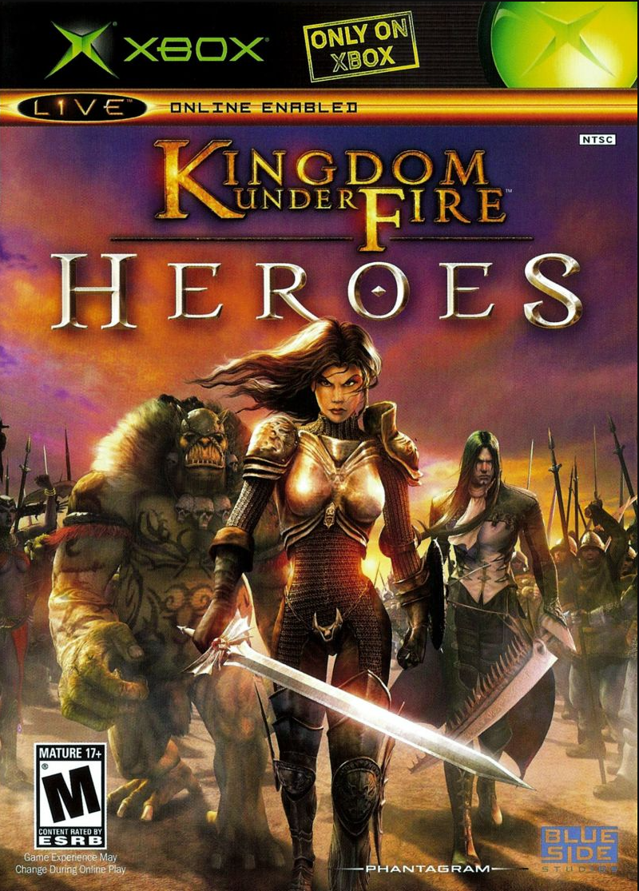
Where Gerald?
This is the prequel to Kingdom Under Fire: The Crusaders which released about a year after. I don't have much to say about it right now because I'm trying to beat Crusaders first, but I will come back and update this. Reviews seem to be mixed but I don't have any particularly negative memories about it. Don't ask about KUF:Circle of Doom though.
Brothers in Arms
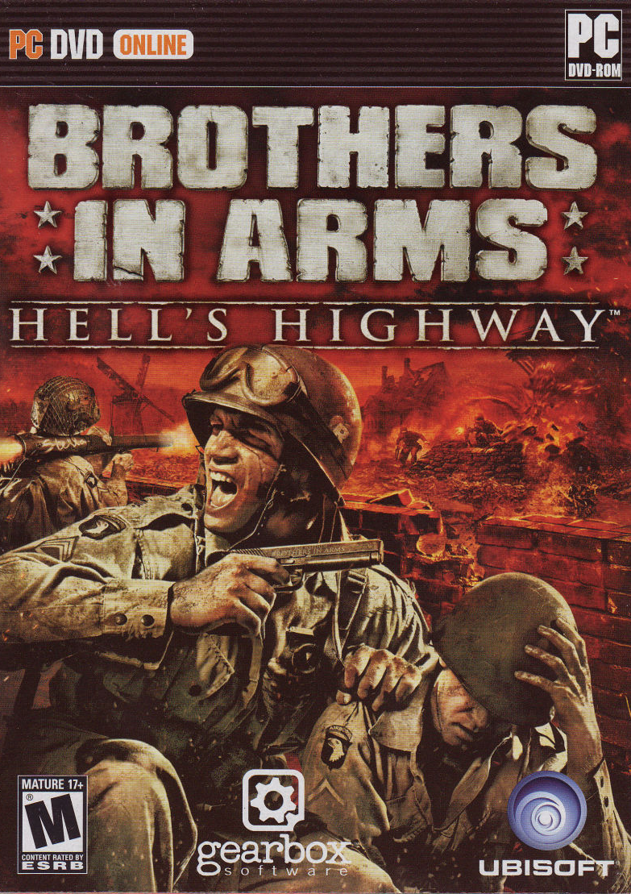
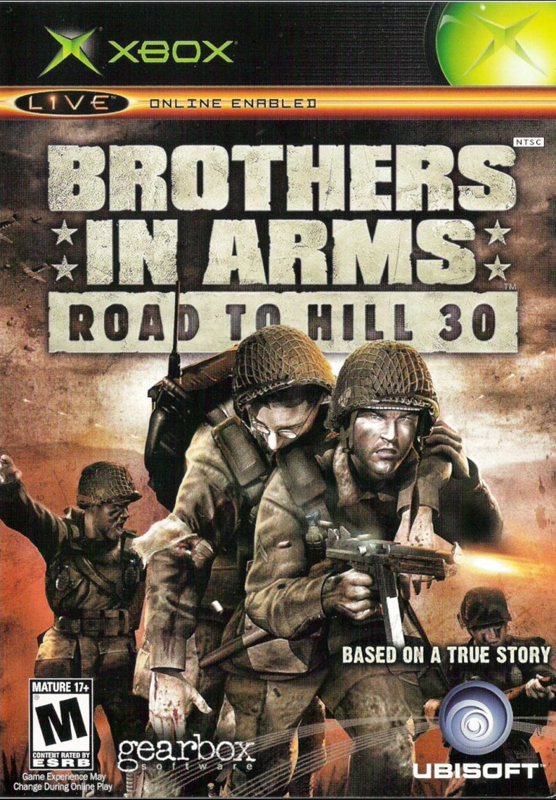
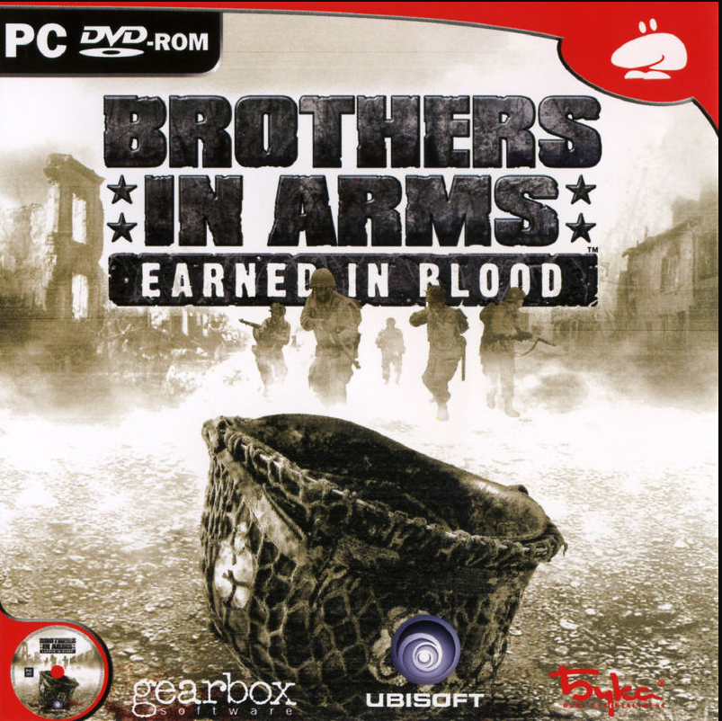
I don't remember too much about these games other than that they take place during WW2. It's a mix of controlling a couple squads of your troops while also being able to play it like an FPS. I played a couple of them and remembered enjoying them but that's about it. There's apparently a lot of games in the series but the consensus seems to be that these are the best. These 3 happen to be on Steam as well so check em out. You can get all 3 for 20 bucks, even without a sale.
Fun fact, these games were made by Gearbox. This is what they were working on before Borderlands.
Battalion Wars
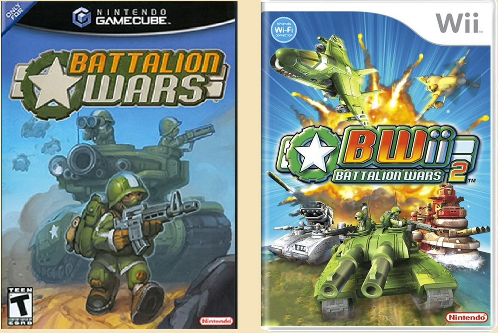
Need to go back and try these
This one is from the Gamecube/Wii era! I don't remember much about it but I think it's probably more casual than a lot of other games on this list. I don't remember any details though so that could be totally wrong.
Brutal Legend
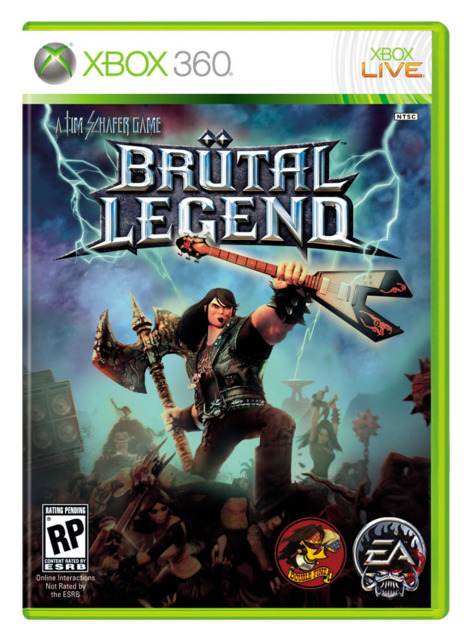
"I've always seen this overlap between medieval warfare and heavy metal. You see heavy metal singers and they'll have like a brace around their arm and they'll be singing about Orcs. So let's just make a world where that all happens. That all gets put together, the heavy metal, and the rock, and the battling, actually does happen. Let's not flirt around with this; let's just do it."
--Tim Schafer, Founder of Double Fine Productions, who developed Brutal Legend
This one is epic because it has Jack Black and is a celebration of all things metal. Really a special game, not much quite like it. The RTS elements were mostly contained in the multiplayer mode, but I'm still counting it.
Mount and Blade
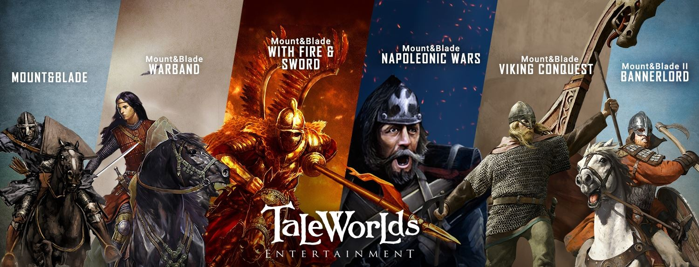
I didn't start playing Mount and Blade til COVID happened. I would have loved these as a kid. The first game was honestly a masterpiece for the time it came out. The modding scene for Warband is unreal. Total conversion mods aplenty, you can convert the game into Middle Earth, Westeros, or Wheel of Time. You can also run Warband on a potato, so definitely pick this one up.
Tower Defense Hybrids
Sanctum
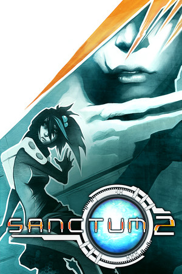
Not pictured: Sanctum 1
Sanctum is a tower defense/FPS hybrid. It's also brutally challenging, which I respect. You have to make a good maze to route enemies and smartly think about tower positioning, balancing upgrades between your towers and weapons, all while shooting accurately. Hard, but fair. I put tons of hours into Sanctum 2. The navigation and shooting just felt great. I would love a Sanctum 3. Unfortunately, these guys are currently working on Satisfactory, which retains at least the movement feel from Sanctum but not much else. Satisfactory is still a good game, though, and I recommend it.
Toy Soldiers
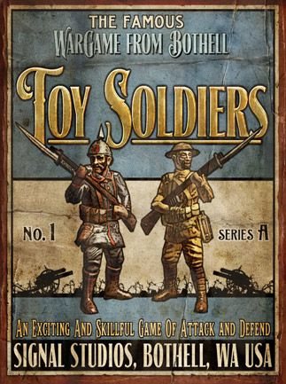
Toy Soldiers
One of the older tower defense/action hybrids, but a solid entry. Had fun when I was young and it first came out, but it's just ok these days.
Hypercharge: Unboxed
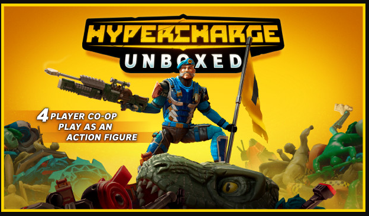
Why say lot word when few word do trick?
Love the Toy Store aesthetic on this one. These guys are obviously passionate indie devs so go and support them by buying this game.
Honorable Mentions
Valkyria Chronicles
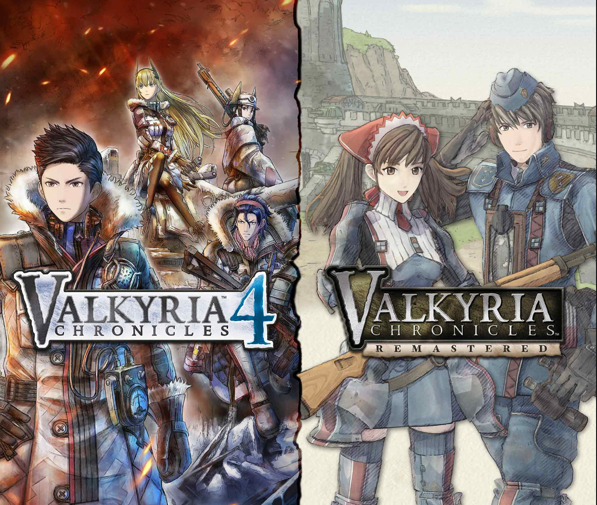
What if WW2 but also, anime?
This doesn't quite fit the hybrid genre I'm talking about, but the combination of moving your units around the map tactical turn based style but with player controlled aiming makes this worth a mention. Unfortunately, I don't like these games because of the scoring system. You're often rewarded the most for scout rushing the objectives instead of methodically moving through the maps and eliminating enemies. Maybe this was fixed in the 4th one but I haven't spent much time with it.
Paper Mario
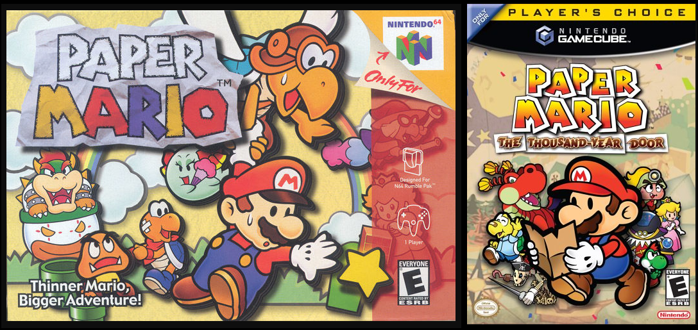
Only these 2 though
The OG Paper Mario games had classic turn-based combat, but with optional timed button presses to deal more or take less damage, or inflict/prevent additional effects. Is this stretching the criteria of a hybrid? And if Paper Mario gets a mention, then shouldn't, like, a lot of the Final Fantasy games also get mentions?
Final Fantasy
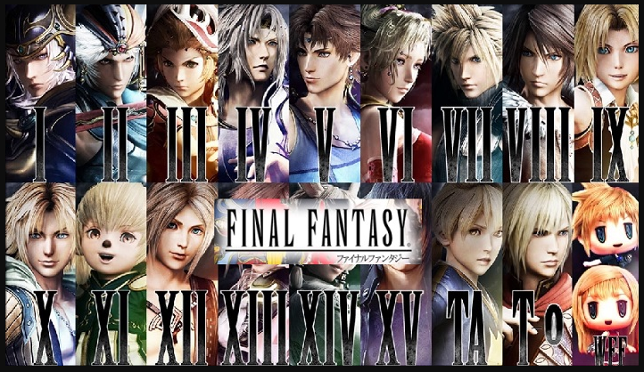
I GUESS
Final Fantasy gets enough press! Pick whichever one you were gonna say and go!